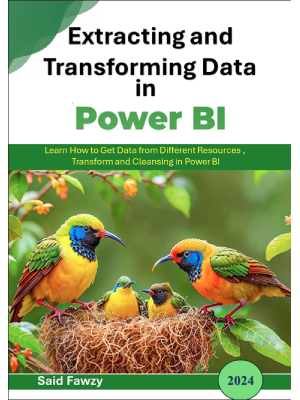
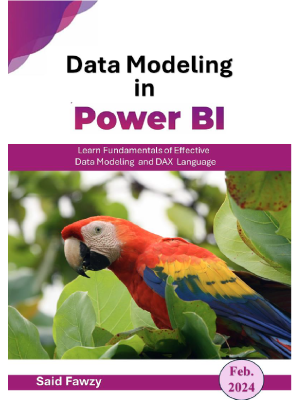

Said Fawzy's Curated Library
Microsoft Power BI Books

Extracting and Transforming Data in Power BI
A comprehensive hands-on guide covering the ETL lifecycle in Power Query. Master data connection, column transformations, joins, and end-to-end data preparation.
دليل تطبيقي شامل يغطي دورة معالجة البيانات (ETL) بالكامل عبر محرك Power Query؛ يشمل تنظيف ودمج البيانات وفحص جودتها مع 18 تدريباً عملياً ومشروع تخرج واقعي.

Data Modelling in Power BI
Master enterprise data modeling architectures and DAX calculations. Covers Fact vs. Dimension tables, Star & Snowflake schemas, relationship cardinality, and DAX measures.
المرجع الشامل في نمذجة وهندسة البيانات؛ يغطي جداول الحقائق والأبعاد (Fact & Dimension)، ومخططات النجمة ورقاقة الثلج، وإدارة سياق التصفية والمقاييس المحسوبة.